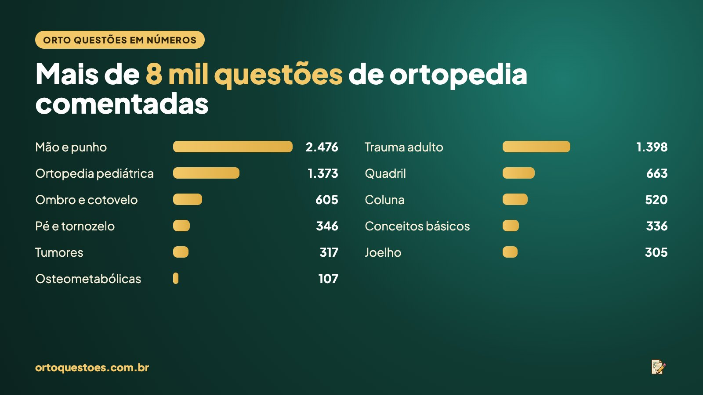
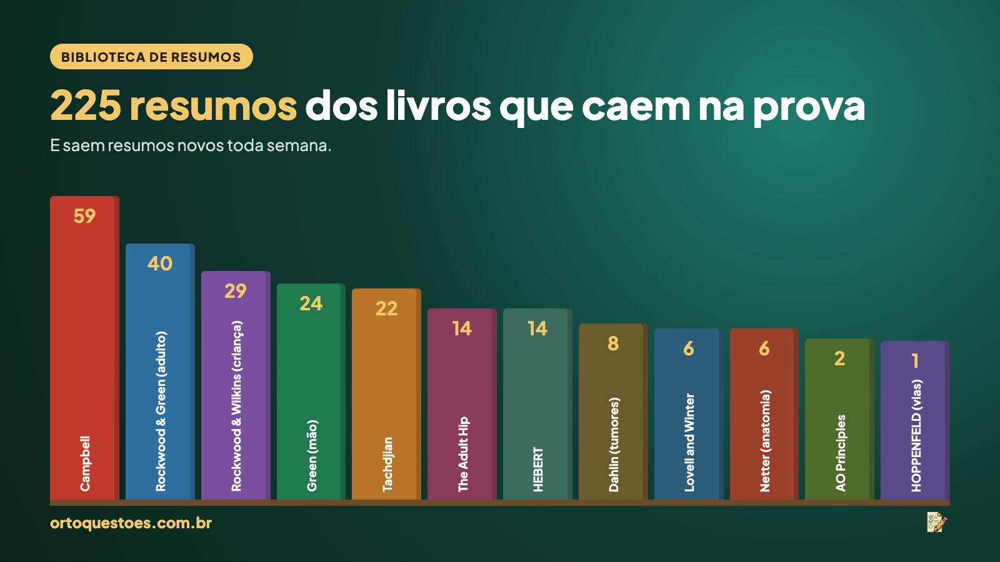
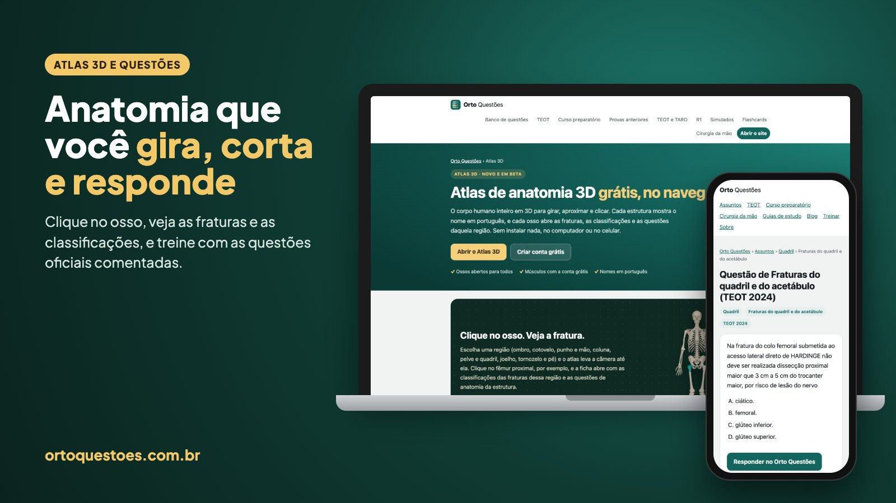
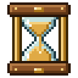
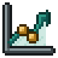

O Orto Questões em números

São mais de 8 mil questões de ortopedia, todas comentadas, divididas em onze áreas: mão e punho (mais de 2.400), trauma do adulto (mais de 1.300), ortopedia pediátrica (mais de 1.300), quadril, ombro e cotovelo, coluna, pé e tornozelo, conceitos básicos, tumores ósseos e de partes moles, joelho e doenças osteometabólicas. Cada área se divide em subtemas, para você treinar exatamente o assunto do seu estágio.
Para quem é o Orto Questões

- Residentes de ortopedia do R1 ao R3, para o TARO de cada ano e a preparação para o TEOT, o título de especialista em ortopedia e traumatologia. Veja o roteiro do curso de ortopedia R1.
- Quem vai fazer R4: provas do ENARE R4 de Ortopedia, R4 de Coluna (SES-DF e Joinville) e Fellowship de Quadril.
- Cirurgia da Mão: provas de ingresso na residência de cirurgia da mão e o treino para o título da especialidade. Tem página própria: curso de cirurgia da mão para R4 e título.
- Subespecialidades: o TEPOP (ortopedia pediátrica) e o TECOC (ombro e cotovelo).
Também estão no acervo as provas de residência e de serviço da USP-SP, FMRP-USP, PUC-SP, UFG, UERJ, INTO, Einstein, IAUPE, CET-PR e SBOT-SP. Veja todas em provas anteriores.
Comentários que funcionam como miniaulas
Todo comentário do Orto Questões é escrito como uma miniaula. Ele explica o que é a doença ou a fratura, o mecanismo, a classificação e a conduta. Depois mostra por que a alternativa correta está certa e por que cada uma das erradas está errada, sempre que possível com o livro, o capítulo e a página de onde veio a informação. Assim, quem responde uma questão aprende o tema inteiro pelas alternativas, e não só um fato solto.
Responder um grupo de questões de um mesmo assunto, lendo os comentários, vira um estudo ativo completo: você tenta lembrar, descobre o que não sabia, lê a explicação na hora certa e a revisão espaçada traz de volta o que ficou fraco. É o método que mais ajuda a lembrar no longo prazo, explicado no nosso guia de estudo ativo.
OrtoQuestões Simulados: a engenharia reversa da prova

Além das questões oficiais, o site tem os OrtoQuestões Simulados: questões autorais escritas no mesmo estilo da prova real. Elas nascem de um processo de engenharia reversa:
1. Ler todas as questões oficiais do tema
Antes de escrever, lemos as provas anteriores do assunto: o que a banca pergunta, quantas vezes, com que tipo de enunciado e quais confusões ela usa nas alternativas erradas.
2. Mapear o padrão da banca
Enunciado curto ou caso clínico, "assinale a correta" ou "exceto", classificações mais cobradas, números que sempre voltam. Esse retrato vira a lista de conferência de cada lote.
3. Escrever a partir do capítulo do livro
Cada questão sai de um capítulo da bibliografia (Rockwood, Campbell, Green e outros), com o gabarito apoiado no livro, e nunca copia a questão oficial.
4. Comentar como miniaula e marcar como simulado
Ela recebe o mesmo comentário completo das oficiais e aparece com o selo "OrtoQuestões Simulados", para você sempre saber que é uma questão autoral, feita para o aprendizado.
O resultado é mais treino no estilo da prova em temas que as provas oficiais cobrem pouco, e um jeito de estudar um capítulo inteiro respondendo. Há também simulados e provas anteriores no tempo, para treinar o dia da prova.
225 resumos dos livros que caem na prova

A Biblioteca do Orto Questões tem hoje 225 resumos de capítulos, e saem resumos novos toda semana. Cada resumo é feito a partir do capítulo do livro de referência: lemos o capítulo, separamos o que as provas cobram (classificações, indicações, números, complicações), explicamos o porquê de cada ponto e ligamos o resumo às questões do tema. No fim de cada questão, o convite "Leia o resumo" leva direto ao capítulo certo.
Os livros: Campbell's Operative Orthopaedics (59), Rockwood and Green's Fractures in Adults (40), Rockwood and Wilkins' Fractures in Children (29), Green's Operative Hand Surgery (24), Tachdjian's Pediatric Orthopaedics (22), Ortopedia e Traumatologia: Princípios e Prática (HEBERT) (14), The Adult Hip: Hip Arthroplasty Surgery (Callaghan, Rosenberg, Rubash e colaboradores) (14), Dahlin's Bone Tumors: General Aspects and Data on 10,165 Cases (8), Lovell and Winter's Pediatric Orthopaedics (6), Netter Atlas de Anatomia Ortopédica (Netter's Concise Orthopaedic Anatomy) (6), AO Principles of Fracture Management (2), Vias de Acesso em Cirurgia Ortopédica (HOPPENFELD, deBOER e BUCKLEY) (1).
Abra um livro para ver todos os resumos dele:
Campbell's Operative Orthopaedics · 59 resumos
- Amputações e próteses Capítulo 16 · General Principles of Amputations, com o Capítulo 17 · Amputations of the Foot, o Capítulo 18 · Amputations of the Lower Extremity e o Capítulo 20 · Major Amputations of the Upper Extremity
- Anatomia da coluna e vias de acesso Capítulo 37 · Vias de acesso anatômicas à coluna, com os capítulos 39, 41, 42, 43 e 44 e o Netter, cap. 2
- Artrite séptica, tuberculose e outras infecções osteoarticulares Capítulo 24 · Infectious Arthritis
- Artroplastia total do joelho Capítulo 8 · Arthroplasty of the Knee
- Artroplastia total do quadril: biomecânica, componentes e fixação Capítulo 3 · Artroplastia do quadril
- Artroscopia do tornozelo Capítulo 54 · General Principles of Arthroscopy (seção Complications of Arthroscopy), com o Capítulo 55 · Arthroscopy of the Foot and Ankle, o Capítulo 12 · Ankle Arthrodesis (seção Arthroscopic Arthrodesis), o Capítulo 88 · Disorders of the Tendons and Fascia (seção Flexor Hallucis Longus) e o Capítulo 94 · Sports Injuries of the Ankle (seção Osteochondral Ridges)
- Artroscopia e vias de acesso do ombro Capítulo 57 · Arthroscopy of the Upper Extremity, com o Capítulo 54 · General Principles of Arthroscopy e o Capítulo 1 · Surgical Techniques (vias de acesso do ombro)
- Artrose do tornozelo, artrodese e artroplastia Capítulo 12 · Ankle Arthrodesis, com o Capítulo 11 · Total Ankle Arthroplasty, o Capítulo 90 · Arthritis of the Foot, o Capítulo 55 · Arthroscopy of the Foot and Ankle (artrodese artroscópica) e o Capítulo 91 · Neuropathic Foot
- Biomecânica do ombro e do cotovelo Capítulo 13 · Shoulder Arthroplasty (seções Anatomy and Biomechanics, Prosthesis Design e Complications of Reverse Total Shoulder Arthroplasty), com os Capítulos 15 · Reconstructive Procedures of the Elbow, 51 · Shoulder and Elbow Injuries e 52 · Recurrent Dislocations do mesmo livro
- Capsulite adesiva (ombro congelado) Capítulo 51 · Shoulder and Elbow Injuries (seção Adhesive Capsulitis), com o Capítulo 57 · Arthroscopy of the Upper Extremity (contraturas e liberação capsular)
- Coalizões tarsais Capítulo 88 · Disorders of the Tendons and Fascia and Adolescent and Adult Acquired Flatfoot Deformity (seção Pes Planus and Tarsal Coalition)
- Condrossarcoma Capítulo 27 · Tumores cartilaginosos (com o condrossarcoma do capítulo 29)
- Deformidades ósseas e alongamento Capítulo 63 · Malunited Fractures, com o Capítulo 31 · Congenital Anomalies of the Lower Extremity (seção Limb-Length Discrepancy), o Capítulo 58 · General Principles of Fracture Treatment (External Fixation) e o Capítulo 10 · Knee Preservation Surgery
- Doença de PAGET Capítulo 4 · Arthroplasty of the Hip (seção Paget Disease), com o Capítulo 27 · Benign Bone Tumors and Nonneoplastic Conditions Simulating Bone Tumors (seção Paget Disease), o Capítulo 29 · Malignant Tumors of Bone (osteossarcoma secundário) e o Capítulo 46 · Degenerative Disorders of the Thoracic and Lumbar Spine (estenose)
- Dor e analgesia em ortopedia Capítulo 67 · Peripheral Nerve Injuries (seção Complex Regional Pain Syndrome), com o Capítulo 2 · Perioperative Patient Optimization and Overview of Tendon-to-Bone Fixation and Bone Grafting e o Capítulo 69 · Basic Surgical Technique and Postoperative Care
- Entorse e instabilidade lateral do tornozelo Capítulo 55 · Arthroscopy of the Foot and Ankle (seções Ankle Impingement Syndromes e Ankle Instability), com o Capítulo 94 · Sports Injuries of the Ankle (seções Acute Ligamentous Injuries, Chronic Instability After Injury e Internal Derangements) e o Capítulo 59 (avaliação da sindesmose)
- Epicondilite lateral e medial Capítulo 82 · Compressive Neuropathies of the Hand, Forearm, and Elbow (síndrome do túnel radial), com o Capítulo 51 · Shoulder and Elbow Injuries (seção Elbow Tendinopathies) e o Capítulo 57 · Arthroscopy of the Upper Extremity (portais do cotovelo e liberação artroscópica)
- Escoliose congênita e neuromuscular Capítulo 40 · Scoliosis
- Espondiloartrites e outras artrites Capítulo 78 · Arthritic Hand
- Espondilólise e espondilolistese Capítulo 42 · Spondylolisthesis (Adolescent), com a seção Spondylolisthesis do Capítulo 46 · Degenerative Disorders of the Thoracic and Lumbar Spine
- Estadiamento, biópsia e margens Capítulo 24 · Princípios gerais dos tumores
- Estenose do canal lombar Capítulo 47 · Adult Spinal Deformity (seção Degenerative Scoliosis), com a seção Stenosis of the Thoracic and Lumbar Spine do Capítulo 46 · Degenerative Disorders of the Thoracic and Lumbar Spine
- Exame físico do ombro Capítulo 52 · Recurrent Dislocations (testes de instabilidade), com os capítulos 51 · Shoulder and Elbow Injuries, 53 · Traumatic Disorders, 57 · Arthroscopy of the Upper Extremity e 14 · Open Reconstructive Procedures of the Shoulder
- Exame físico do pé e tornozelo Capítulo 86 · Surgical Techniques of the Foot and Ankle, com o Capítulo 94 · Sports Injuries of the Ankle, o Capítulo 53 · Traumatic Disorders (Rupture of Achilles Tendon), o Capítulo 88 · Disorders of the Tendons and Fascia and Adolescent and Adult Acquired Flatfoot Deformity e o Capítulo 92 · Neurogenic Disorders
- Exame neurológico e radiculopatias Capítulo 45 · Degenerative Disorders of the Cervical Spine, com o Capítulo 46 · Degenerative Disorders of the Thoracic and Lumbar Spine e os capítulos 40, 43 e 48
- Hálux valgo Capítulo 87 · Disorders of the Hallux
- Hérnia de disco e mielopatia cervical Capítulo 44 · Approaches to the Cervical, Thoracic, and Lumbar Spine, com o Capítulo 45 · Degenerative Disorders of the Cervical Spine e o capítulo 43
- Hérnia de disco lombar, torácica e cervical Capítulo 38 · Doenças degenerativas da coluna cervical e Capítulo 39 · Doenças degenerativas da coluna torácica e lombar
- Imagem da coluna Capítulo 43 · Anatomy of the Spine, com os capítulos 38, 39, 40, 41, 42, 45, 46, 47, 48 e 49
- Imagem do joelho Capítulo 10 · Knee Preservation Surgery (radiografia da artrose, eixo e calcificações para-articulares), lido com os capítulos de imagem avançada, lesões do joelho e luxações do mesmo livro
- Imagem do ombro e cotovelo Capítulo 3 · Advanced Imaging in Orthopaedics, com os capítulos 13 · Shoulder Arthroplasty, 51 · Shoulder and Elbow Injuries, 52 · Recurrent Dislocations, 53 · Traumatic Disorders, 57 · Arthroscopy of the Upper Extremity e 65 · Acute Dislocations
- Imagem do pé e tornozelo Capítulo 93 · Fractures and Dislocations of the Foot
- Infecções da coluna Capítulo 49 · Infections and Tumors of the Spine
- Instabilidade do ombro Capítulo 47 · Luxações recidivantes (ombro), com o capítulo 35 do Rockwood and Green's Fractures in Adults
- Instabilidade femoropatelar Capítulo 38 · Fractures and Dislocations in Children (seção Patellar Dislocations), com o Capítulo 52 · Recurrent Dislocations (seção Patella) e o Capítulo 50 · Knee Injuries (seção Chondromalacia of the Patella)
- Lesão do ligamento cruzado anterior e o que vem junto Capítulo 45 · Lesões do joelho (ligamento cruzado anterior, meniscos e exame ligamentar)
- Lesões condrais do joelho Capítulo 56 · Arthroscopy of the Lower Extremity, com o Capítulo 50 · Knee Injuries (seção Articular Cartilage Injuries)
- Lesões do bíceps, do peitoral maior e do tríceps Capítulo 48 · Distúrbios traumáticos (bíceps, peitoral maior e tríceps), com os capítulos 46 e 52 e o capítulo 25 do Green
- Lesões meniscais Capítulo 50 · Knee Injuries (seção Menisci), com o Capítulo 56 · Arthroscopy of the Lower Extremity (cirurgia artroscópica do menisco)
- Lesões musculares Capítulo 53 · Traumatic Disorders
- Lesões nervosas do ombro e cotovelo Capítulo 14 · Open Reconstructive Procedures of the Shoulder (transferências para escápula alada), com o Capítulo 51 · Shoulder and Elbow Injuries (supraescapular e espaço quadrangular), o Capítulo 67 · Peripheral Nerve Injuries e o Capítulo 82 · Compressive Neuropathies of the Hand, Forearm, and Elbow
- Lesões osteocondrais do tálus Capítulo 34 · Osteochondrosis or Epiphysitis and Other Miscellaneous Affections
- Lombalgia Capítulo 46 · Degenerative Disorders of the Thoracic and Lumbar Spine
- Manguito rotador: exame, roturas e tratamento Capítulo 46 · Shoulder and Elbow Injuries, com os capítulos 52 · Arthroscopy of the Upper Extremity e 12 · Shoulder and Elbow Arthroplasty
- Metatarsalgia e neuroma de MORTON Capítulo 89 · Lesser Toe Abnormalities and Disorders of Nails
- Metástases ósseas e fratura patológica Capítulo 27 · Tumores malignos do osso (carcinoma metastático), com os capítulos 24, 26, 37 e 42 e o capítulo 25 do Rockwood (fraturas patológicas)
- Omartrose, artroplastia e artrodese do ombro Capítulo 12 · Shoulder and Elbow Arthroplasty, com o Capítulo 13 · Salvage Operations for the Shoulder and Elbow
- Osteonecrose da cabeça femoral no adulto Capítulo 7 · Hip Pain in the Young Adult and Hip Preservation Surgery (seção Osteonecrosis of the Femoral Head), com os capítulos 3, 4, 5, 60 e 68
- Osteossarcoma Capítulo 29 · Malignant Tumors of Bone
- Peitoral maior e outras rupturas tendíneas Capítulo 1 · Surgical Techniques, com o Capítulo 53 · Traumatic Disorders (seções Pectoralis Major, Triceps Tendon e Biceps Brachii Tendons), o Capítulo 14 · Open Reconstructive Procedures of the Shoulder e o Capítulo 15 · Reconstructive Procedures of the Elbow
- Pseudartrose congênita da tíbia e deformidades da perna Capítulo 31 · Congenital Anomalies of the Lower Extremity (seções Anomalies of the Leg e Congenital Deficiencies of the Long Bones)
- Pé cavo Capítulo 92 · Neurogenic Disorders (seção Cavus Foot)
- Pé diabético e neuroartropatia de Charcot Capítulo 91 · Neuropathic Foot
- Pé plano adquirido do adulto e disfunção do tibial posterior Capítulo 90 · Arthritis of the Foot (seção Hindfoot: subtalar, talonavicular e triple arthrodesis), com o Capítulo 88 · Disorders of the Tendons and Fascia and Adolescent and Adult Acquired Flatfoot Deformity (seção Disorders of the Posterior Tibial Tendon and Adult Acquired Flatfoot Deformity)
- Rigidez do cotovelo Capítulo 15 · Reconstructive Procedures of the Elbow
- Tendões fibulares e outras tendinopatias do pé e tornozelo Capítulo 94 · Sports Injuries of the Ankle (seção Peroneal Tendon Subluxation and Dislocation), com o Capítulo 88 · Disorders of the Tendons and Fascia and Adolescent and Adult Acquired Flatfoot Deformity (seções Achilles Tendon, Anterior Tibial Tendon, Peroneal Tendons e Flexor Tendons), o Capítulo 53 · Traumatic Disorders (seções Peroneal Tendons e Rupture of Achilles Tendon) e o Capítulo 1 · Surgical Techniques
- Tuberculose osteoarticular Capítulo 25 · Tuberculosis and Other Unusual Infections
- Tumor de células gigantes Capítulo 28 · Aggressive Benign Tumors of Bone
- Tumores e sarcomas de partes moles Capítulo 30 · Soft-Tissue Tumors
Rockwood and Green's Fractures in Adults · 40 resumos
- Consolidação óssea Capítulo 2 · Bone, Cartilage, and Tendon Healing
- Fratura da clavícula Capítulo 34 · Clavicle Fractures
- Fratura da diáfise da tíbia e da fíbula Capítulo 63 · Tibia and Fibula Shaft Fractures
- Fratura da diáfise do fêmur Capítulo 57 · Femoral Shaft Fractures
- Fratura da diáfise do úmero Capítulo 37 · Humeral Shaft Fractures
- Fratura da escápula Capítulo 33 · Scapular Fractures
- Fratura da patela, luxação aguda da patela e lesões do aparelho extensor Capítulo 60 · Patellar Fractures and Dislocations and Extensor Mechanism Injuries
- Fratura do colo do fêmur Capítulo 53 · Femoral Neck Fractures
- Fratura do fêmur distal Capítulo 58 · Distal Femur Fractures
- Fratura do pilão tibial Capítulo 64 · Tibial Pilon Fractures
- Fratura do planalto tibial Capítulo 62 · Tibial Plateau Fractures
- Fratura do rádio distal no adulto Capítulo 43 · Fractures of the Distal Radius and Ulna
- Fratura do úmero distal no adulto Capítulo 39 · Distal Humerus Fractures
- Fratura do úmero proximal Capítulo 36 · Proximal Humeral Fractures
- Fratura subtrocantérica do fêmur Capítulo 55 · Subtrochanteric Femur Fractures
- Fratura transtrocantérica Capítulo 54 · Trochanteric Hip Fractures
- Fraturas diafisárias do rádio e da ulna, Monteggia e Galeazzi Capítulo 42 · Diaphyseal Fractures of the Radius and Ulna
- Fraturas do acetábulo Capítulo 51 · Acetabulum Fractures
- Fraturas do retropé, mediopé e antepé Capítulo 67 · Calcaneus Fractures; Capítulo 68 · Fractures and Dislocations of the Midfoot and Forefoot
- Fraturas do tornozelo Capítulo 65 · Ankle Fractures
- Fraturas do tálus e do calcâneo Capítulos 66 e 67 · Fractures and Dislocations of the Talus; Calcaneus Fractures
- Fraturas e luxações da coluna cervical Capítulo 48 · Cervical Spine Fractures and Dislocations
- Fraturas e luxações da coluna toracolombar Capítulo 49 · Thoracolumbar Spine Fractures and Dislocations
- Fraturas e luxações da mão Capítulo 45 · Hand Fractures and Dislocations
- Fraturas e luxações do carpo Capítulo 44 · Carpal Fractures and Dislocations
- Fraturas por estresse Capítulo 24 · Stress Fractures
- Imagem em ortopedia Capítulo 7 · Imaging Considerations in Orthopaedic Trauma
- Lesão medular e síndromes medulares Capítulo 47 · Principles of Spine Trauma Care
- Lesões do anel pélvico Capítulo 50 · Pelvic Ring Injuries
- Luxação acromioclavicular e esternoclavicular Capítulo 32 · Acromioclavicular and Sternoclavicular Joint Injuries
- Luxação do cotovelo, cabeça do rádio e tríade terrível Capítulo 40 · Elbow Dislocations and Terrible Triad Injuries
- Luxação do joelho e lesão multiligamentar Capítulo 61 · Knee Dislocations
- Luxação do quadril e fratura da cabeça femoral Capítulo 52 · Hip Dislocations and Femoral Head Fractures
- Medicamentos e exames laboratoriais Capítulo 26 · Venous Thromboembolism in Patients With Skeletal Trauma
- Metodologia científica e estatística Capítulo 8 · Outcome Studies in Trauma
- Osteoporose: diagnóstico e tratamento Capítulo 4 · Osteoporosis and Metabolic Bone Disease
- Politrauma e controle de danos Capítulo 14 · Management of the Multiply Injured Patient
- Pseudartrose e retardo de consolidação Capítulo 30 · Principles of Nonunion and Bone Defect Treatment
- Síndrome compartimental aguda Capítulo 17 · Acute Compartment Syndrome
- Tumores da coluna Capítulo 25 · Pathologic Fractures
Rockwood and Wilkins' Fractures in Children · 29 resumos
- Avaliação do cotovelo da criança traumatizada Capítulo 13 · Evaluation of the Injured Pediatric Elbow
- Consolidação, fise e remodelação na criança Capítulo 2 · Fracture Repair in Children
- Descolamento epifisário do úmero distal, côndilo medial, epicôndilo lateral e outras fraturas raras do cotovelo Capítulo 18 · Distal Humeral Physeal, Medial Condyle, Lateral Epicondylar, and Other Uncommon Elbow Fractures
- Epidemiologia das fraturas na criança Capítulo 1 · Epidemiology of Fractures in Children
- Fratura da diáfise do fêmur na criança Capítulo 25 · Femoral Shaft Fractures
- Fratura da fise distal do fêmur na criança Capítulo 26 · Fractures of the Distal Femoral Physis
- Fratura da fise proximal e da tuberosidade da tíbia na criança Capítulo 27 · Proximal Tibial Physeal Fractures (com a fratura metafisária do capítulo 29)
- Fratura em T (intercondiliana) do úmero distal na criança Capítulo 15 · T-Condylar Fractures of the Distal Humerus
- Fratura supracondiliana do úmero na criança Capítulo 14 · Supracondylar Fractures of the Distal Humerus
- Fratura-luxação de MONTEGGIA na criança Capítulo 12 · Monteggia Fracture-Dislocation in Children
- Fraturas da clavícula e da escápula e lesões acromioclavicular e esternoclavicular na criança Capítulo 20 · Clavicle and Scapula Fractures and Acromioclavicular and Sternoclavicular Injuries
- Fraturas da coluna toracolombar na criança Capítulo 22 · Thoracolumbar Spine Fractures
- Fraturas da diáfise do rádio e da ulna na criança Capítulo 10 · Diaphyseal Radius and Ulna Fractures
- Fraturas da pelve e do acetábulo na criança Capítulo 23 · Pelvic and Acetabular Fractures
- Fraturas da tíbia e da fíbula na criança Capítulo 29 · Fractures of the Shaft of the Tibia and Fibula
- Fraturas do colo do fêmur e luxação traumática do quadril na criança Capítulo 24 · Fractures and Traumatic Dislocations of the Hip in Children
- Fraturas do colo do rádio, do olécrano e do coronoide na criança Capítulo 11 · Radial Neck and Olecranon Fractures
- Fraturas do côndilo lateral e do capítulo na criança Capítulo 17 · Lateral Condylar and Capitellar Fractures of the Distal Humerus
- Fraturas do rádio e da ulna distais na criança Capítulo 9 · Fractures of the Distal Radius and Ulna
- Fraturas do tornozelo na criança Capítulo 30 · Ankle Fractures
- Fraturas e luxações da mão e do carpo na criança Capítulo 8 · Fractures and Dislocations of the Hand and Carpal Bones in Children
- Fraturas patológicas e maus-tratos na criança Capítulo 7 · Pathologic Fractures and Nonaccidental Injuries
- Fraturas, luxações e outras lesões do pé na criança Capítulo 31 · Fractures, Dislocations, and Other Injuries of the Foot
- Lesões da coluna cervical na criança Capítulo 21 · Cervical Spine Injuries in Children
- Lesões intra-articulares do joelho na criança Capítulo 28 · Intra-Articular Injuries of the Knee
- Luxação do cotovelo, fratura do epicôndilo medial e pronação dolorosa na criança Capítulo 16 · Medial Epicondyle Fractures and Dislocations of the Elbow
- Luxação do ombro e fraturas do úmero proximal e da diáfise na criança Capítulo 19 · Shoulder Dislocation and Fractures of the Proximal Humerus and Humeral Shaft
- Síndrome compartimental na criança Capítulo 6 · Compartment Syndrome in Children
- Tratamento conservador e imobilização Capítulo 4 · Cast and Splint Immobilization
Green's Operative Hand Surgery · 24 resumos
- Amputações e reimplantes na mão Capítulo 42 · Replantation (com o capítulo 49, Digital Amputations)
- Artrose do punho e artroscopia Capítulo 12 · Wrist Arthrodesis and Arthroplasty
- Artrose e artroplastia do cotovelo Capítulo 27 · Total Elbow Arthroplasty
- Biomecânica da mão e do punho Capítulo 13 · Wrist Instabilities, Misalignments, and Dislocations
- Dedo em gatilho e outras tenossinovites Capítulo 56 · Tendinopathy
- Deficiências longitudinais e mão torta Capítulo 38 · Malformations and Deformities of the Wrist and Forearm (com os capítulos 35, 36 e 37)
- Deformidades dos dedos Capítulo 10 · Treatment of the Stiff Finger and Hand
- Doença de DUPUYTREN Capítulo 4 · Dupuytren Disease
- Doença de KIENBÖCK Capítulo 16 · Fractures of the Carpal Bones
- Exame físico da mão e do punho Capítulo 28 · Compression Neuropathies (com os capítulos 5, 6, 8, 10, 13, 14, 31, 56 e 60)
- Fibrocartilagem triangular e punho ulnar Capítulo 14 · Distal Radioulnar Joint
- Imagem da mão e do punho Capítulo 15 · Distal Radius Fractures (com os capítulos 7, 8, 11, 12, 13, 14, 16, 41 e 55)
- Lesões de nervos periféricos Capítulo 30 · Nerve Injury and Repair
- Lesões dos tendões extensores Capítulo 5 · Extensor Tendon Injury
- Lesões dos tendões flexores Capítulo 6 · Lesão do tendão flexor
- Malformações congênitas da mão e do antebraço Capítulos 35 a 38 · Mão pediátrica, com o Tachdjian (caps. 12, 21 e 35)
- Mão reumatoide Capítulo 55 · Rheumatoid Arthritis and Other Connective Tissue Diseases
- Neuropatias de compressão no membro superior Capítulo 28 · Neuropatias de compressão
- Plexo braquial e paralisia obstétrica Capítulo 34 · Traumatic Brachial Plexus Injury (com o capítulo 40, Pediatric Brachial Plexus Palsy)
- Retalhos e cobertura cutânea da mão e do membro superior Capítulo 44 · Nonmicrosurgical Coverage of the Upper Extremity
- Rizartrose e artrose da mão Capítulo 11 · Treatment of the Osteoarthritic Hand and Thumb
- Sindactilia e polidactilia Capítulo 36 · Deformities of the Hand and Fingers
- Síndrome do túnel do carpo Capítulo 31 · Principles of Tendon Transfers of Median, Radial, and Ulnar Nerves (oponentoplastia de CAMITZ), lido com o Capítulo 28 · Compression Neuropathies, eixo do resumo, e os capítulos 29, 53 e 56
- Tumores da mão Capítulo 59 · Bone and Soft Tissue Tumors (com o capítulo 58, Skin Tumors of the Hand and Upper Extremity)
Tachdjian's Pediatric Orthopaedics · 22 resumos
- Alinhamento, torções e coxa vara na criança Capítulo 16 · Congenital Coxa Vara, Capítulo 17 · Disorders of the Femur e Capítulo 18 · Disorders of the Leg
- Artrite séptica na criança e no adulto Capítulo 22 · Arthritis (Acute Transient Synovitis of the Hip), com a seção Septic Arthritis do capítulo de infecções
- Artrogripose e doenças neuromusculares Capítulo 37 · Orthopaedic-Related Syndromes (Arthrogryposis); Capítulo 32 · Disorders of the Spinal Cord; Capítulo 33 · Poliomyelitis
- Cifose e doença de SCHEUERMANN Capítulo 10 · Kyphosis
- Coluna cervical da criança e torcicolo Capítulo 8 · Disorders of the Neck
- Deficiências dos membros na criança Capítulo 21 · Limb Deficiencies
- Desenvolvimento neuropsicomotor Capítulo 1 · Growth and Development
- Displasia do desenvolvimento do quadril Capítulo 13 · Displasia do desenvolvimento do quadril
- Displasia fibrosa e lesões fibro-ósseas afins Capítulo 25 · Benign Musculoskeletal Tumors
- Displasias esqueléticas e síndromes Capítulo 36 · Skeletal Dysplasias; Capítulo 37 · Orthopaedic-Related Syndromes
- Doença de Legg-Calvé-Perthes Capítulo 14 · Legg-Calvé-Perthes Disease
- Epifisiólise proximal do fêmur Capítulo 15 · Slipped Capital Femoral Epiphysis
- Escoliose idiopática Capítulo 9 · Scoliosis
- Marcha na criança Capítulo 5 · Gait Analysis
- Mielomeningocele Capítulo 32 · Disorders of the Spinal Cord
- Osteocondrite dissecante Capítulo 40 · Pediatric Sports Medicine: Issues in Contemporary Sports Participation
- Osteogênese imperfeita Capítulo 38 · Metabolic and Endocrine Disorders of Bone (seção Osteogenesis Imperfecta)
- Osteomielite e artrite séptica na criança Capítulo 23 · Infecções do sistema musculoesquelético
- Outras doenças congênitas Capítulo 12 · Disorders of the Upper Extremity (com os capítulos 16, 18, 19 e 21)
- Paralisia cerebral Capítulo 31 · Disorders of the Brain (Cerebral Palsy)
- Pé torto congênito Capítulo 19 · Disorders of the Foot (Congenital Talipes Equinovarus, Clubfoot)
- Sarcoma de EWING Capítulo 26 · Malignant Bone Tumors
Ortopedia e Traumatologia: Princípios e Prática (HEBERT) · 14 resumos
- Artroscopia do joelho Capítulo 64 · Artroscopia do joelho
- Biomecânica do joelho Capítulo 18 · Reabilitação fisioterápica do joelho (seção Anatomia e biomecânica aplicada), com os Capítulos 1 · Marcha normal e patológica, 22 · Deformidades rotacionais e angulares dos membros inferiores, 24 · Correção de deformidades com fixador externo e 63 · Lesões meniscoligamentares do joelho do mesmo livro e os Capítulos 50 · Knee Injuries (seção Knee Joint Mechanics and Kinematics) e 8 · Arthroplasty of the Knee (seção Knee and Implant Biomechanics) do Campbell's Operative Orthopaedics, 15ª ed.
- Biomecânica e marcha do pé e tornozelo Capítulo 1 · Marcha normal e patológica, com os Capítulos 20.4 · Pé plano, 21.1 · Talalgias, 21.2 · Lesões tendíneas e 69 · Fraturas e lesões do tornozelo no adulto do mesmo livro e os Capítulos 11 · Total Ankle Arthroplasty, 12 · Ankle Arthrodesis, 88 · Disorders of the Tendons and Fascia e 94 · Sports Injuries of the Ankle do Campbell's Operative Orthopaedics, 15ª ed.
- Deformidades congênitas do pé Capítulo 20.5 · Pé talo vertical congênito, com o Capítulo 20.3 · Pé metatarso-varo e o Capítulo 20.1 · Pé torto congênito: tratamento conservador do mesmo livro, o Capítulo 29 · The Foot do Lovell and Winter's Pediatric Orthopaedics, 7ª ed., o Capítulo 19 · Disorders of the Foot do Tachdjian's Pediatric Orthopaedics, 6ª ed., e o Capítulo 31 · Congenital Anomalies of the Lower Extremity do Campbell's Operative Orthopaedics, 15ª ed.
- Exame físico do cotovelo Capítulo 4 · Ombro e cotovelo (seções Epicondilite lateral e Síndromes compressivas do membro superior), com o Capítulo 48 · Traumatismos do cotovelo no adulto do mesmo livro e os Capítulos 52 · Recurrent Dislocations e 53 · Traumatic Disorders do Campbell's Operative Orthopaedics, 15ª ed.
- Exame físico do joelho Capítulo 63 · Lesões meniscoligamentares do joelho, com os Capítulos 16 · Joelho do adulto, 15 e 61 do mesmo livro e o Capítulo 50 · Knee Injuries (seções Menisci e Acute Traumatic Lesions of Ligaments) do Campbell's Operative Orthopaedics, 15ª ed.
- Fasciíte plantar e dor no calcanhar Capítulo 21.1 · Talalgias
- Gonartrose e osteotomias Capítulo 16 · Joelho do adulto (seções Osteoartrite, Tratamento conservador e Tratamento cirúrgico), com o Capítulo 10 · Knee Preservation Surgery (seções Osteoarthritis of the Knee, Proximal Tibial Osteotomy e Distal Femoral Osteotomy) do Campbell's Operative Orthopaedics, 15ª ed.
- Hiperparatireoidismo e osteodistrofia renal Capítulo 27 · Doenças osteometabólicas
- Hálux rígido Capítulo 21.5 · Metatarsalgias (seção Metatarsalgia I isolada: hálux rígido), com o Capítulo 21.3 · Hálux valgo do mesmo livro, os Capítulos 87 · Disorders of the Hallux (seção Hallux Rigidus) e 90 · Arthritis of the Foot do Campbell's Operative Orthopaedics, 15ª ed., e o Capítulo 19 · Disorders of the Foot do Tachdjian's Pediatric Orthopaedics, 6ª ed.
- Lesões SLAP e do lábio superior Capítulo 5 · Artroscopia do ombro: diagnóstico e tratamento, com o Capítulo 45 · Traumatismos do ombro e o Capítulo 4 · Ombro e cotovelo do mesmo livro e os Capítulos 57 · Arthroscopy of the Upper Extremity, 51 · Shoulder and Elbow Injuries e 3 · Advanced Imaging in Orthopaedics do Campbell's Operative Orthopaedics, 15ª ed.
- Pubalgia e osteíte púbica Capítulo 76 · Reabilitação das lesões do esporte
- Pé reumatoide Capítulo 21.6 · Pé reumático, com o Capítulo 21.5 · Metatarsalgias do mesmo livro e o Capítulo 90 · Arthritis of the Foot do Campbell's Operative Orthopaedics, 15ª ed.
- Tendão calcâneo Capítulo 21.2 · Lesões tendíneas, com o Capítulo 21.1 · Talalgias do mesmo livro, os Capítulos 53 · Traumatic Disorders (seção Rupture of Achilles Tendon) e 88 · Disorders of the Tendons and Fascia (seção Disorders of the Achilles Tendon) do Campbell's Operative Orthopaedics, 15ª ed.
The Adult Hip: Hip Arthroplasty Surgery (Callaghan, Rosenberg, Rubash e colaboradores) · 14 resumos
- Anatomia cirúrgica do quadril e acessos da artroplastia total Capítulos 2 (Gross Anatomy of the Hip), 3 (Posterior Approach), 6 (Trochanteric Approaches), 7 (Anterior Approach, Fracture Table) e 8 (Anterior Approach, Traditional Table)
- Coxartrose Capítulo 41 · Arthritis and Inflammatory Conditions of the Hip
- Displasia do quadril no adulto Capítulo 71 · Total Hip Arthroplasty for Developmental Hip Dysplasia
- Dor peritrocantérica e tendinopatias do quadril Capítulo 43 · Soft Tissue Disorders About the Hip
- Exame físico do quadril Capítulo 22 · History and Physical Examination
- Fraturas do quadril e do acetábulo Capítulos 9 (Ilioinguinal, Extended Iliofemoral, and Combined Approaches), 77 (Proximal Femoral Fractures Treated with Arthroplasty) e 87 (Periprosthetic Fractures of the Pelvis Associated with Hip Arthroplasty), com trechos dos capítulos 1, 2, 5, 7, 23, 24, 38, 72 e 74
- Fraturas periprotéticas do quadril Capítulo 88 · Periprosthetic Fractures of the Femur Associated with Hip Arthroplasty
- História da cirurgia do quadril, biomecânica e cinemática da artroplastia Capítulos 1 (A History of Hip Surgery), 10 (Biomechanics of Hip Reconstruction) e 11 (Kinematics of the Hip)
- Imagem do quadril Capítulo 23 · Radiographic Evaluation of the Hip
- Impacto femoroacetabular, artroscopia do quadril e lesão labral Capítulo 35 · Sequelae of Pediatric Hip Disease
- Medição do desgaste, resposta biológica aos detritos e imagem da artroplastia do quadril Capítulos 18 (Clinical Wear Assessment) e 21 (Biologic Response to Wear Debris), com trechos dos capítulos 23 (Radiographic Evaluation), 25 (Magnetic Resonance Imaging) e 26 (Preoperative Medical Evaluation)
- Metais, cimento ósseo, tribologia e metal contra metal na artroplastia do quadril Capítulos 15 (Basic Science of Metals), 16 (Basic Science of Bone Cement), 17 (Tribology) e 20 (Metal-on-Metal Articulations), com trechos dos capítulos 1 e 12
- Osteotomias do quadril Capítulo 104 · Use of the Extended Trochanteric Osteotomy in Revision Total Hip Arthroplasty
- Superfícies de apoio da artroplastia do quadril: polietileno e cerâmica Capítulos 12 (Biomaterials Overview), 13 (Basic Science of Ceramics), 14 (Basic Science of Polyethylene) e 19 (Ceramic Articulations)
Dahlin's Bone Tumors: General Aspects and Data on 10,165 Cases · 8 resumos
- Cisto ósseo simples e cisto ósseo aneurismático Capítulo 26 · Conditions That Commonly Simulate Primary Neoplasms of Bone (seção Simple Cyst)
- Condroblastoma (e o fibroma condromixoide) Capítulo 4 · Benign Chondroblastoma
- Cordoma Capítulo 21 · Chordoma
- Encondroma e encondromatoses Capítulo 3 · Chondroma
- Mieloma múltiplo e plasmocitoma Capítulo 16 · Myeloma
- Osteocondroma e exostoses múltiplas Capítulo 2 · Osteochondroma (Osteocartilaginous Exostosis)
- Osteoma osteoide (e o osteoblastoma) Capítulo 9 · Osteoid Osteoma
- Outras lesões pseudotumorais Capítulo 14 · Benign Fibrous Histiocytoma, com o Capítulo 26 · Conditions That Commonly Simulate Primary Neoplasms of Bone
Lovell and Winter's Pediatric Orthopaedics · 6 resumos
- Artrite idiopática juvenil e outras artrites da criança Capítulo 11 · Juvenile Idiopathic Arthritis
- Histiocitose de células de LANGERHANS Capítulo 10 · Diseases of the Hematopoietic System (seção Langerhans Cell Histiocytosis), com o Capítulo 13 · Bone and Soft-Tissue Tumors
- Menisco discoide Capítulo 31 · Sports Medicine in the Growing Child
- Osteocondroses Capítulo 9 · Localized Disorders of Skin and Soft Tissue (seção The Osteochondroses), com o Capítulo 29 · The Foot e o Capítulo 31 · Sports Medicine in the Growing Child
- Pé plano flexível Capítulo 29 · The Foot (seção Flexible Flatfoot), com o Capítulo 19 · Disorders of the Foot do Tachdjian's Pediatric Orthopaedics, 6ª ed.
- Raquitismo e osteomalácia Capítulo 6 · Metabolic and Endocrine Abnormalities
Netter Atlas de Anatomia Ortopédica (Netter's Concise Orthopaedic Anatomy) · 6 resumos
- Anatomia da mão, do punho e do antebraço Capítulo 5 · Antebraço e Capítulo 6 · Mão
- Anatomia da perna, do tornozelo e do pé Capítulo 10 · Pé e tornozelo (com a perna do capítulo 9)
- Anatomia do cotovelo Capítulo 4 · Braço (o cotovelo), com o Capítulo 5 · Antebraço
- Anatomia do joelho Capítulo 9 · Perna/Joelho
- Anatomia do ombro e do braço Capítulo 3 · Ombro e Capítulo 4 · Braço
- Anatomia do quadril e da coxa Capítulo 7 · Pelve e Capítulo 8 · Coxa e quadril
AO Principles of Fracture Management · 2 resumos
- Fixadores externos Capítulo 3.3.3 · External fixator
- Princípios de osteossíntese Capítulo 1.2 · Biology and biomechanics in bone healing (com os capítulos 1.3, 1.4, 2.2, 3.2.1, 3.2.2, 3.2.3, 3.3.1, 3.3.2, 3.3.3, 3.3.4 e 5.3)
Vias de Acesso em Cirurgia Ortopédica (HOPPENFELD, deBOER e BUCKLEY) · 1 resumo
- Vias de acesso à coluna Capítulo 6 · A Coluna Vertebral
Atlas de anatomia 3D

O Atlas 3D abre no navegador, no computador ou no celular. Você gira, aproxima e clica no corpo inteiro, com o nome de cada estrutura em português; escolhe uma região e a câmera vai até ela; liga e desliga as camadas (ossos, músculos, ligamentos, nervos, artérias, veias e fáscias); faz cortes sagital, coronal e axial; e cada osso abre uma ficha com as fraturas, as classificações e as questões daquela região. Os ossos são abertos a todos, e os músculos ficam liberados com a conta grátis.
Cronograma: você estuda, o site organiza
O que mais cansa na residência não é estudar: é decidir o que estudar, todo dia, entre plantões. O cronograma do Orto Questões tira essa decisão de você. Você diz a data da prova e o seu ritmo, e ele distribui os temas até lá, encaixa a revisão do que você errou, trata o dia de plantão como dia leve e se ajusta quando a semana aperta. Você abre o site e o dia já está pronto.
É tempo que volta para você: sem planilha, sem montar lista, sem a culpa de não saber se está atrasado. Teste quanto rende o seu dia:
Monte o seu dia
Que dia é hoje?
Dia comum: questões novas do assunto da semana e a revisão do dia.
Sugestão para começar: cerca de 3 minutos por questão nova e 1 minuto e meio por revisão.
Tudo o que vem junto
Questões por tema
Escolha a área, o subtema, a prova e o ano. Marque Certeza, Dúvida ou Chute em cada resposta.

Revisão espaçada
O que você errou, chutou ou respondeu na dúvida volta no dia certo, sem você anotar nada.

Caderno de erros
Todas as questões que você errou num só lugar, para rever antes da prova.

Desempenho por tema
Veja onde está acertando e onde está a lacuna, área por área.

Flashcards prontos
Classificações, epônimos e números em cartões rápidos, sem perder tempo montando baralho.

Simulados e provas no tempo
Provas anteriores inteiras e o Simulado Nacional, para treinar o dia da prova.
Biblioteca de resumos
225 resumos de capítulos, ligados às questões de cada tema.

Atlas 3D
Anatomia em camadas, cortes e fichas ortopédicas de cada osso.
Cronograma até a prova
O plano do dia pronto, com dia de plantão leve e revisão encaixada.
Comece grátis, assine quando quiser
A conta grátis libera 20 questões por dia, com o comentário completo de cada uma, para você conhecer o método e o site por dentro. Para estudar sem limite, com o cronograma, os simulados e todas as ferramentas, há três planos com preço acessível:
| Plano | Preço por mês | Total cobrado |
|---|---|---|
| Grátis | R$ 0 | 20 questões por dia, sem cartão |
| Mensal | R$ 39,90 | R$ 39,90 a cada mês |
| Semestral | R$ 34,90 | R$ 209,40 a cada 6 meses |
| Anual | R$ 29,90 | R$ 358,80 por ano |
Pagamento por cartão, com renovação automática, ou por Pix, como pagamento único do período. Há garantia de 7 dias. As regras completas estão nas Condições da Assinatura.
Perguntas frequentes
Quantas questões o Orto Questões tem?
Mais de 8 mil questões de ortopedia comentadas, de onze áreas, com provas oficiais do TEOT, do TARO, de R4 e de Cirurgia da Mão, além dos OrtoQuestões Simulados.
O que são os OrtoQuestões Simulados?
Questões autorais feitas por engenharia reversa das provas anteriores: estudamos o padrão da banca e escrevemos questões no mesmo estilo a partir do capítulo do livro, com comentário completo. Não são questões oficiais.
Quantos resumos existem e de quais livros?
São 225 resumos de capítulos, de 12 livros: Campbell, Rockwood and Green, Rockwood and Wilkins, Green's Operative Hand Surgery, Tachdjian, HEBERT, The Adult Hip (Callaghan), Dahlin, Netter, Lovell and Winter, AO Principles of Fracture Management e HOPPENFELD. Saem resumos novos toda semana.
A conta grátis tem limite?
A conta grátis libera 20 questões por dia, com os comentários completos. Os planos liberam questões sem limite, o cronograma e os simulados.
Quanto custa o Orto Questões?
O plano mensal custa R$ 39,90 por mês; o semestral, R$ 209,40 (R$ 34,90 por mês); e o anual, R$ 358,80 (R$ 29,90 por mês). Há garantia de 7 dias.
Serve para R4 e Cirurgia da Mão?
Sim. Há provas do ENARE R4 de Ortopedia, de R4 de Coluna, do Fellowship de Quadril e uma área própria de Cirurgia da Mão, com provas de ingresso e treino para o título.
Mais de 8 mil questões esperando por você
Crie a conta grátis e responda as suas 20 questões de hoje. Amanhã, a revisão já vai estar pronta.